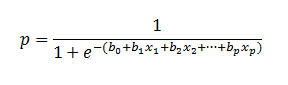
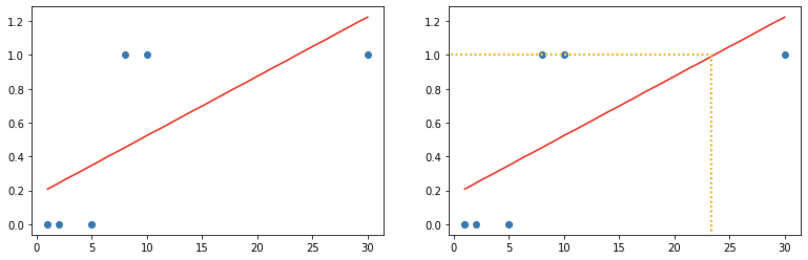

[Python] Machine Learning-4
Tensorflow
이번시간에는 Tensorflow를 이용해서 Linear Regression을 해보도록 하겠습니다.
먼저 Tensorflow를 설치하고 시작해보도록 하겠습니다. Tensorflow는 버전이 1.xx 버전과 2.xx 버전이 있습니다. 이번시간에는 1.15버전을 설치하여 사용하도록 하겠습니다.
$ pip install tensorflow==1.15
설치를 하였으니 ‘Hello World’를 출력해보도록 하겠습니다.
import tensorflow as tf
print(tf.__version__)
node = tf.constant('Hello World')
# 우리가 만든 그래프를 실행하기 위해서 Session이 필요!
sess = tf.Session()
# runner 인 Session 이 생성되었으니 이걸 이용해서 node를 실행해 보아요!
print(sess.run(node)) # b'Hello World' b는 바이트
print(sess.run(node).decode()) #Hello World'
이번에는 덧셈을 수행해보도록 하겠습니다.
# placeholder를 이용
# 2개의 수를 입력으로 받아서 덧셈연산을 수행
import tensorflow as tf
node1 = tf.placeholder(dtype = tf.float32) # scalar 형태의 값 1개를 실수로 받아들일 수 있는 Placeholder
node2 = tf.placeholder(dtype = tf.float32) # scalar 형태의 값 1개를 실수로 받아들일 수 있는 Placeholder
node3 = node1 + node2
sess = tf.Session()
sess.run(node3, feed_dict={node1:30,node2:20})
간단한 예제를 통해서 예측모델을 만들어보도록 하겠습니다.
import tensorflow as tf
# 1. Raw Data Loading
# 2. Data Preprocessing(데이터 전처리)
# 3. Training data set
x_data = [2,4,5,7,10]
t_data = [7,11,13,17,23]
# 4. Weight & bias 정의
W = tf.Variable(tf.random.normal([1]), name = 'weight') # W = np.random.rand(1,1)
b = tf.Variable(tf.random.normal([1]), name = 'bias') # b = np.random.rand(1)
# 5. hypothesis, simple Linear Regression Model
H = W * x_data + b
# 6. Loss function
loss = tf.reduce_mean(tf.square(t_data-H)+b)
#7. train node 생성
optimizer = tf.train.GradientDescentOptimizer(learning_rate = 0.001)
train = optimizer.minimize(loss)
# 8. 실행준비 및 초기화작업
sess = tf.Session()
sess.run(tf.global_variables_initializer()) # 초기화 작업
# 9. 반복해서 학습을 진행!!
for step in range(30000):
_,W_val, b_val = sess.run([train,W,b])
if step % 3000 == 0:
print('W:{}, b:{}'.format(W_val, b_val))
print(sess.run(H)) # [ 6.9997516 10.999857 12.999908 17.000013 23.000172 ]
# 10. predict!!
print(sess.run(H, feed_dict={X:[6]})) # [13.111737]
Classfication
Training Data Set 특성과 분포를 파악한 후 미지의 입력데이터에 대해 어떤 종류의 값으로 분류될 수 있는지 예측합니다. 학습 후 예측데이터의 결과를 0혹은 1사이의 실수로 판단하고 0.5이상의 확률을 가진 인자들을 Pass (1) 그 이하인 확률을 Fail (0)으로 판단하여 분류하는 것을 Classification이라고 합니다.
Logistic Regression
이전까지 배웠던 Linear Regression과 더불어 Logistic Regression에 대하여 알아보도록 하겠습니다. Logistic Regression은 0에서 1사이의 값을 가지는 확률로 표현하기 위하여 사용됩니다.

Sigmoid
먼저 구한 Linear Regression 모델에서 나온 값을 하기식에 대입하여 계산하면 0에서 1사이의 값을 추출할 수 있습니다.

Classification - Cost(Loss) function
Sigmoid를 사용할 경우 Linear regression에서 사용하였던 Cost Function을 사용할 수 없습니다. 왜냐하면 Convex fuction 이 되지 않기 때문에 자칫 잘못하면 Local optima가 생길 수 있어 Global minimum을 찾을수 없기 때문입니다. 그렇기 때문에 Logistic Regression의 Cost function 은 하기와 같이 정의 됩니다.
Loss function = -(t*log y + (1-t)log(1-y))
간단한 예시를 통해서 Logistic Regression에 대하여 알아보도록 하겠습니다.
공부시간에 따른 시험합격여부에 대한 데이터를 Linear Regression으로 분석하고 합격여부를 알아보도록 하겠습니다.
import numpy as np
import matplotlib.pyplot as plt
from sklearn import linear_model
# Training Data Set
x_data = np.array([1,2,5,8,10,30]) # 공부시간
t_data = np.array([0,0,0,1,1,1]) # 시험합격여부(0:Fail, 1:Pass)
model = linear_model.LinearRegression()
model.fit(x_data.reshape(-1,1),
t_data.reshape(-1,1))
print(model.coef_, model.intercept_) # [[0.03500583]] [0.17327888]
model.coef_
plt.scatter(x_data, t_data)
plt.plot(x_data, x_data * model.coef_.ravel() + model.intercept_, 'r')

상기 그래프를 보면 실데이터에서는 8시간 이상 공부를 한다면 충분히 합격을 할 수 있지만 Linear Regression으로 분석을 한다면 24시간 정도를 공부를 해야 시험을 합격할 수 있습니다. 이러한 문제때문에 Classification을 하려고 할때에는 Logistic Regression을 사용한다고 보시면 되겠습니다.
그렇다면 다른 데이터를 사용해서 한번 구해보도록 하겠습니다.
# 예측모델
import tensorflow as tf
import numpy as np
# training data set
# 외국어 공부시간(시간), 해외체류기간(년)
x_data = np.array([[1,0],
[2,0],
[5,1],
[2,3],
[3,3],
[8,1],
[10,0]])
# 시험합격여부(0:Fail, 1:Pass)
t_data = np.array([[0],
[0],
[0],
[1],
[1],
[1],
[1]])
# placeholder
X = tf.placeholder(shape=[None,2], dtype = tf.float32)
T = tf.placeholder(shape=[None,1], dtype = tf.float32)
# Weight & bias
W = tf.Variable(tf.random.normal([2,1]), name = 'weight')
b = tf.Variable(tf.random.normal([1]), name = 'bias')
# Hypothesis(Logistic Model)
logit = tf.matmul(X,W) + b # Linear Regression Hypothesis
H = tf.sigmoid(logit)
# loss function
loss = tf.reduce_mean(tf.nn.sigmoid_cross_entropy_with_logits(logits = logit, labels=T))
## 8. Training 노드생성
train = tf.train.GradientDescentOptimizer(learning_rate=0.001).minimize(loss)
# Session & 초기화
sess = tf.Session()
sess.run(tf.global_variables_initializer())
# 10. 학습을 진행(Graph를 실행)
for step in range(3000):
_, W_val,b_val, loss_val = sess.run([train, W,b, loss], feed_dict={X:x_data, T:t_data})
# train = _ / W = W_val / b = b_val / loss = loss_val
if step%300 ==0:
print ('W:{}, b:{}, loss:{}'.format(W_val,b_val,loss_val))
# 11. 내가 알고싶은 값을 넣어서 predict!!
# predict_data_x = np.array([[150,8,85]])
# predict_data_x = scaler_x.transform(predict_data_x)
result = sess.run(H, feed_dict={X:[[4,2]]})
# result = scaler_t.inverse_transform(result)
print(result)
'''
W:[[-0.09505238]
[-0.28877407]], b:[0.5809646], loss:0.9031272530555725
W:[[ 0.07203682]
[-0.16718708]], b:[0.57360214], loss:0.7202726006507874
W:[[ 0.09072737]
[-0.08331408]], b:[0.54003835], loss:0.6912368535995483
W:[[ 0.08967677]
[-0.01323891]], b:[0.5013897], loss:0.6698331832885742
W:[[0.08644719]
[0.04807308]], b:[0.46102154], loss:0.6518125534057617
W:[[0.08408184]
[0.10256049]], b:[0.41977572], loss:0.6362107396125793
W:[[0.08290234]
[0.15140326]], b:[0.37797752], loss:0.6224187016487122
W:[[0.082752 ]
[0.19549072]], b:[0.33582368], loss:0.6100078225135803
W:[[0.0834328 ]
[0.23553707]], b:[0.29346314], loss:0.5986728668212891
W:[[0.0847775]
[0.2721263]], b:[0.25101608], loss:0.5881935954093933
[[0.7625255]]
'''